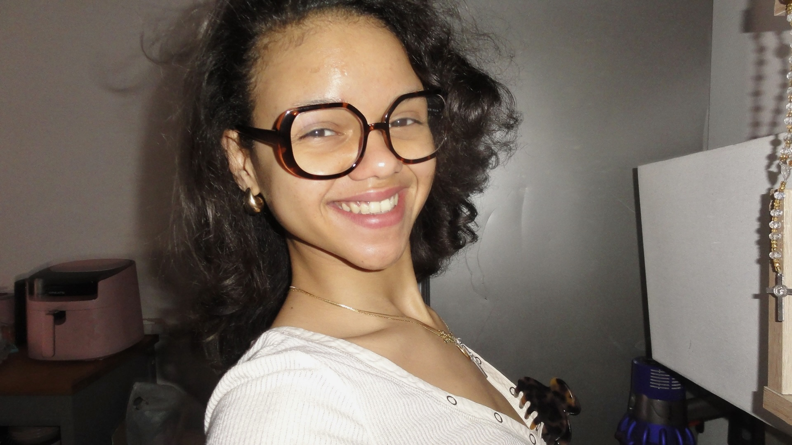

👤 Présentation
Apprenez à me connaître un peu mieux

Corinne Hurtaux
Étudiante BTS SIO SLAM — Développement & Cybersécurité
Bonjour à tous ! Je m'appelle Corinne Hurtaux et je suis actuellement étudiante en BTS Services Informatiques aux Organisations, option Solutions Logicielles et Applications Métiers (SLAM). Curieuse et déterminée, je construis progressivement mes compétences techniques à travers des projets concrets et des expériences en entreprise.
Passionnée par le développement d'applications et la cybersécurité, je m'investis pleinement dans ma formation pour acquérir des bases solides. Chaque projet est pour moi une nouvelle opportunité d'apprendre, de progresser et de me dépasser.
Ce portfolio retrace mon parcours, mes réalisations et les compétences que j'ai développées tout au long de ma formation BTS SIO SLAM.
✨ En quelques mots
🎓 Formation
BTS SIO — option SLAM
Solutions Logicielles et Applications Métiers
En cours de formation
💼 Objectif professionnel
Développement d'applications web et mobiles,
cybersécurité et gestion des systèmes informatiques.
À la recherche d'opportunités professionnelles.
💻 Compétences techniques
HTML, CSS, JavaScript, Python, SQL
Flask, WordPress, Google Ads
VS Code, Git, VMware, Photoshop
🌟 Centres d'intérêt
Danse, Yoga & Pilates
Bénévolat (COP1)
Cybersécurité & Innovation numérique
📄 Mon CV
Retrouvez l'ensemble de mon parcours et mes expériences dans mon CV.